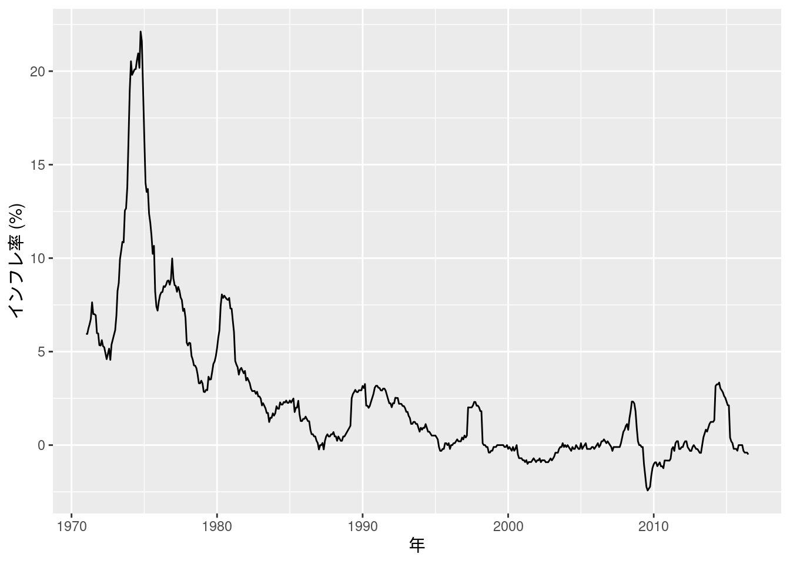
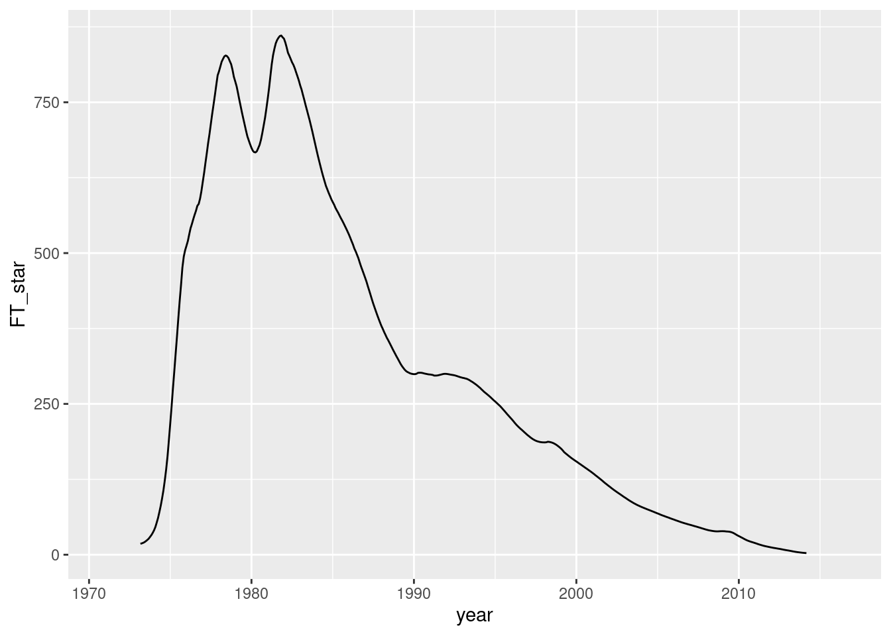

第11章 トレンドと構造変化
先に出版社サイトよりデータをダウンロードする.
# サポートファイルへのリンク
curl <- "https://www.yuhikaku.co.jp/static_files/05385_support11.zip"
# ダウンロード保存用フォルダが存在しない場合, 作成
if(!dir.exists("downloads")){
dir.create("downloads")
}
cdestfile <- "downloads/support11.zip"
download.file(curl, cdestfile)
# データ保存用フォルダが存在しない場合, 作成
if(!dir.exists("data")){
dir.create("data")
}
# WSL上のRで解凍すると文字化けするので、Linuxのコマンドを外部呼び出し
# Windowsの場合は別途コマンドを用いる.
if(.Platform$OS.type == "unix") {
system(sprintf('unzip -n -Ocp932 %s -d %s', "downloads/support11.zip", "./data"))
} else {
print("Windowsで解凍するコマンドを別途追加せよ.")
}必要なライブラリを読み込む.
library(tidyverse)
library(readxl)
library(estatapi)
library(hpfilter)
library(urca)
library(tsm)
library(fredr)
library(modelsummary)(11.3) 式
データは前章図10-3図10-3で用いたものを使う. 本文中にある通りデータの期間を1991年から1997年に絞り込み, さらにトレンド用の変数を作成する.
## New names:
## • `` -> `...1`data_exp11.3 <- Fig_1_nominalGDP_annual %>%
filter(1991 <= ...1 & ...1 <= 2017)
data_exp11.3 <- data_exp11.3 %>%
mutate(trend = 1:dim(data_exp11.3)[1])
lm(log(実質暦年) * 100 ~ trend, data = data_exp11.3) %>% summary()##
## Call:
## lm(formula = log(実質暦年) * 100 ~ trend, data = data_exp11.3)
##
## Residuals:
## Min 1Q Median 3Q Max
## -4.4861 -0.9720 -0.3222 1.3159 3.8803
##
## Coefficients:
## Estimate Std. Error t value Pr(>|t|)
## (Intercept) 1.295e+03 7.527e-01 1720.39 < 2e-16 ***
## trend 8.491e-01 4.698e-02 18.07 7.26e-16 ***
## ---
## Signif. codes: 0 '***' 0.001 '**' 0.01 '*' 0.05 '.' 0.1 ' ' 1
##
## Residual standard error: 1.901 on 25 degrees of freedom
## Multiple R-squared: 0.9289, Adjusted R-squared: 0.9261
## F-statistic: 326.7 on 1 and 25 DF, p-value: 7.259e-16図11-1 対数実質GDPと線形トレンド
(11.3) 式に続いてggplotでグラフを描画する.
data_exp11.3 %>%
ggplot(aes(x = ...1, y = log(実質暦年) * 100)) +
geom_smooth(method = "lm", se = FALSE, aes(color = "線形トレンド (OLS推定値)")) +
geom_line(aes(color = "対数実質GDP")) +
scale_color_hue(name = element_blank()) +
labs(x = "年", y = "対数実質GDP x 100") +
theme(legend.position = c(0, 1), legend.justification = c(0, 1)) + # 凡例を左上に表示
scale_y_continuous(labels = scales::label_number())## `geom_smooth()` using formula = 'y ~ x'
図11-2 対数実質GDPの長期系列
内閣府のサイトには, GDPデータ自体は1955年から掲載されているが, 現在に至るまで幾度か基準が変更されたため異なる体型基準年間でデータが直接接続しない旨注意が記載されている(https://www.esri.cao.go.jp/jp/sna/otoiawase/faq/qa2.html).
まずは1990基準により計算された, 1955～1998年の実質国民総支出データをダウンロードする. この基準では, 1979年までの数値を用いる.
curl <- "https://www.esri.cao.go.jp/jp/sna/data/data_list/kakuhou/files/h10/tables/55fcm1r.xls"
cdestfile <- "downloads/55fcm1r.xls"
download.file(curl, cdestfile)1980年以降のデータは, 図10-7と同じ手順でe-Statからダウンロードする. それぞれ2000基準のデータを1980～1993年, それ以降は2015基準のを用いる.
appId <- scan("e-stat_appId.txt", what = "character")
fig11_2_data_h12 <- estat_getStatsData(appId = appId, statsDataId = "0003398787")
fig11_2_data_h12 <- fig11_2_data_h12 %>% filter(`国内総生産(支出側)項目(平成12年基準)` == "５．国内総生産（支出側）" &
表章項目 == "金額" &
time_code <= "1993000000") %>%
dplyr::select(value) %>%
rename("実質国内総支出" = value) %>%
mutate(年 = 1980:1993)
fig11_2_data_2015 <- estat_getStatsData(appId = appId, statsDataId = "0003109751")
fig11_2_data_2015 <- fig11_2_data_2015 %>% filter(国内総生産_実質暦年 == "国内総生産(支出側)" &
表章項目 == "金額") %>%
dplyr::select(value) %>%
rename("実質国内総支出" = value) %>%
mutate(年 = 1994:2023)fig11_2_data_55fcm1r <- read_excel("downloads/55fcm1r.xls", sheet = "実数")
fig11_2_data <- data.frame(実質国内総支出 = as.numeric(t(fig11_2_data_55fcm1r[35, 2:26]))) %>%
remove_rownames() %>%
mutate(年 = 1955:1979)
fig11_2_data <- bind_rows(fig11_2_data, fig11_2_data_h12) %>%
bind_rows(fig11_2_data_2015)
fig11_2_data %>%
ggplot(aes(x = 年, y = log(実質国内総支出) * 100)) +
geom_line()
図11-3 HPフィルターのトレンド成分
HPフィルターはRではhpfilterというパッケージで実装されている.
データフレーム形式の時系列データyのトレンド成分を求めるには, hpfilter::hp1(y, lambda = lambda)とすればよい.
fig11_3_data_trend <- fig11_2_data %>%
dplyr::select(実質国内総支出) %>%
hp1(lambda = 100) %>%
rename("トレンド成分" = 実質国内総支出)
fig11_3_data <- cbind(fig11_2_data, fig11_3_data_trend)
fig11_3_data %>%
pivot_longer(cols = c("実質国内総支出", "トレンド成分")) %>%
ggplot(aes(x = 年, y = value, color = name)) +
geom_line() +
scale_color_hue(name = element_blank(), labels = c("トレンド成分", "GDP")) +
labs(x = element_blank(), y = element_blank()) +
theme(legend.position = c(0, 1), legend.justification = c(0, 1))
図11-4 GDPギャップ推定値の比較
内閣府によるデータは図10-12で用いたものを使う.
ただし観測頻度を四半期ごとから年次にするため, 一度ts形式にしたうえでaggregate()を用いて変換する.
線形トレンド回帰は, 本文中にある通り1990年より前か否かを示すダミー変数を作って推定した.
またHPフィルターは, ここではlambda = 6.25とした.
Fig_12_GDPgap_quarterly <- read_excel("./data/10_第10章/Fig_12_GDPgap_quarterly.xlsx")
fig11_4_data <- Fig_12_GDPgap_quarterly %>%
dplyr::select(内閣府) %>%
ts(start = c(1980, 1), frequency = 4) %>%
aggregate(nfrequency = 1, FUN = mean) %>%
data.frame() %>%
cbind(年 = 1980:2017)
fig11_4_data <- fig11_2_data %>%
filter(1980 <= 年 & 年 <= 2017) %>%
dplyr::select(実質国内総支出) %>%
cbind(fig11_4_data) %>%
mutate(trend = 1:dim(fig11_4_data)[1],
pre1990 = 年 < 1990)
fig11_4_lm <- lm(log(実質国内総支出) * 100 ~ trend * pre1990, data = fig11_4_data)
fig11_4_hp_trend <- hp1(fig11_4_data %>%
dplyr::select(実質国内総支出) %>%
mutate(実質国内総支出 = log(実質国内総支出) * 100)
, lambda = 6.25) %>% pull()
fig11_4_data <- fig11_4_data %>%
mutate(線形トレンド回帰 = fig11_4_lm$residuals,
HPフィルター = log(実質国内総支出) * 100 - fig11_4_hp_trend)
fig11_4_data %>%
pivot_longer(cols = c("内閣府", "線形トレンド回帰", "HPフィルター")) %>%
ggplot(aes(x = 年, y = value, color = name)) +
geom_line() +
scale_color_hue(name = element_blank(), labels = c("HPフィルター", "内閣府", "線形トレンド回帰")) +
labs(x = element_blank(), y = element_blank()) +
theme(legend.position = c(0, 1), legend.justification = c(0, 1))実証例11.1 GDPの線形トレンド・モデル推定
ex11.1_data <- fig11_2_data %>%
mutate(GDP = log(実質国内総支出) * 100) %>%
mutate(GDP_lag = lag(GDP))
ex11.1_data_1 <- ex11.1_data %>%
filter(年 <= 1973) %>%
mutate(trend = 1:(1973 - 1955 + 1))
lm(GDP ~ trend, data = ex11.1_data_1) %>% summary()##
## Call:
## lm(formula = GDP ~ trend, data = ex11.1_data_1)
##
## Residuals:
## Min 1Q Median 3Q Max
## -3.639 -1.671 -0.331 1.407 4.397
##
## Coefficients:
## Estimate Std. Error t value Pr(>|t|)
## (Intercept) 1063.5336 1.1535 922.0 <2e-16 ***
## trend 9.1663 0.1012 90.6 <2e-16 ***
## ---
## Signif. codes: 0 '***' 0.001 '**' 0.01 '*' 0.05 '.' 0.1 ' ' 1
##
## Residual standard error: 2.415 on 17 degrees of freedom
## Multiple R-squared: 0.9979, Adjusted R-squared: 0.9978
## F-statistic: 8209 on 1 and 17 DF, p-value: < 2.2e-16ex11.1_data_2 <- ex11.1_data %>%
filter(1974 <= 年 & 年 <= 1990) %>%
mutate(trend = 1:(1990 - 1974 + 1))
lm(GDP ~ trend, data = ex11.1_data_2) %>% summary()##
## Call:
## lm(formula = GDP ~ trend, data = ex11.1_data_2)
##
## Residuals:
## Min 1Q Median 3Q Max
## -2.737 -1.660 0.077 1.319 3.499
##
## Coefficients:
## Estimate Std. Error t value Pr(>|t|)
## (Intercept) 1.228e+03 9.487e-01 1294.5 <2e-16 ***
## trend 4.092e+00 9.258e-02 44.2 <2e-16 ***
## ---
## Signif. codes: 0 '***' 0.001 '**' 0.01 '*' 0.05 '.' 0.1 ' ' 1
##
## Residual standard error: 1.87 on 15 degrees of freedom
## Multiple R-squared: 0.9924, Adjusted R-squared: 0.9919
## F-statistic: 1954 on 1 and 15 DF, p-value: < 2.2e-16ex11.1_data_3 <- ex11.1_data %>%
filter(1991 <= 年 & 年 <= 2017) %>%
mutate(trend = 1:(2017 - 1991 + 1))
lm(GDP ~ trend, data = ex11.1_data_3) %>% summary()##
## Call:
## lm(formula = GDP ~ trend, data = ex11.1_data_3)
##
## Residuals:
## Min 1Q Median 3Q Max
## -4.6946 -1.2527 -0.0614 1.4012 3.7776
##
## Coefficients:
## Estimate Std. Error t value Pr(>|t|)
## (Intercept) 1301.9385 0.7946 1638.5 < 2e-16 ***
## trend 0.6894 0.0496 13.9 2.9e-13 ***
## ---
## Signif. codes: 0 '***' 0.001 '**' 0.01 '*' 0.05 '.' 0.1 ' ' 1
##
## Residual standard error: 2.007 on 25 degrees of freedom
## Multiple R-squared: 0.8854, Adjusted R-squared: 0.8808
## F-statistic: 193.2 on 1 and 25 DF, p-value: 2.899e-13##
## Call:
## lm(formula = GDP ~ trend + GDP_lag, data = ex11.1_data_1)
##
## Residuals:
## Min 1Q Median 3Q Max
## -2.81645 -1.37189 0.00691 1.73576 3.03942
##
## Coefficients:
## Estimate Std. Error t value Pr(>|t|)
## (Intercept) 518.1008 229.4803 2.258 0.0393 *
## trend 4.4632 2.0108 2.220 0.0423 *
## GDP_lag 0.5167 0.2177 2.373 0.0314 *
## ---
## Signif. codes: 0 '***' 0.001 '**' 0.01 '*' 0.05 '.' 0.1 ' ' 1
##
## Residual standard error: 2.042 on 15 degrees of freedom
## (1 observation deleted due to missingness)
## Multiple R-squared: 0.9985, Adjusted R-squared: 0.9983
## F-statistic: 4950 on 2 and 15 DF, p-value: < 2.2e-16##
## Call:
## lm(formula = GDP ~ trend + GDP_lag, data = ex11.1_data_2)
##
## Residuals:
## Min 1Q Median 3Q Max
## -1.9907 -1.2997 0.4490 0.9211 2.2835
##
## Coefficients:
## Estimate Std. Error t value Pr(>|t|)
## (Intercept) 543.3746 227.1009 2.393 0.03131 *
## trend 1.9227 0.7235 2.658 0.01874 *
## GDP_lag 0.5585 0.1852 3.015 0.00927 **
## ---
## Signif. codes: 0 '***' 0.001 '**' 0.01 '*' 0.05 '.' 0.1 ' ' 1
##
## Residual standard error: 1.507 on 14 degrees of freedom
## Multiple R-squared: 0.9954, Adjusted R-squared: 0.9947
## F-statistic: 1508 on 2 and 14 DF, p-value: < 2.2e-16##
## Call:
## lm(formula = GDP ~ trend + GDP_lag, data = ex11.1_data_3)
##
## Residuals:
## Min 1Q Median 3Q Max
## -5.4941 -0.5359 0.4347 1.1741 2.5211
##
## Coefficients:
## Estimate Std. Error t value Pr(>|t|)
## (Intercept) 773.6247 245.1207 3.156 0.00427 **
## trend 0.4118 0.1369 3.009 0.00607 **
## GDP_lag 0.4060 0.1884 2.155 0.04138 *
## ---
## Signif. codes: 0 '***' 0.001 '**' 0.01 '*' 0.05 '.' 0.1 ' ' 1
##
## Residual standard error: 1.875 on 24 degrees of freedom
## Multiple R-squared: 0.904, Adjusted R-squared: 0.896
## F-statistic: 113 on 2 and 24 DF, p-value: 6.131e-13実証例11.2 為替レートの単位根検定
データはエクセルファイルに収録されているようだが, ところどころNAとなっている箇所がある. NAになっている日については, ここでは単純に前日の値を用いることにする.
JapanIntervention1991_2004 <- read_excel("data/11_第11章/JapanIntervention1991-2004.xls", sheet = "YenDollar")## New names:
## • `` -> `...3`
## • `` -> `...4`
## • `` -> `...6`data_ex11.2 <- JapanIntervention1991_2004[3:3047, ]
data_ex11.2 <- data_ex11.2 %>% mutate(date = mdy(Date)) %>%
data.frame() %>%
mutate(rate_NY = as.numeric(Yen.Dollar.Rate)) %>%
dplyr::select(date, rate_NY, Interventions) %>%
fill(rate_NY, .direction = "down")
data_ex11.2 <- data_ex11.2 %>% mutate(S = log(rate_NY) * 100,
trend = 1:dim(data_ex11.2)[1])
lm(S - lag(S) ~ 0 + lag(S), data = data_ex11.2) %>% summary()##
## Call:
## lm(formula = S - lag(S) ~ 0 + lag(S), data = data_ex11.2)
##
## Residuals:
## Min 1Q Median 3Q Max
## -7.4107 -0.3690 0.0060 0.3957 4.1037
##
## Coefficients:
## Estimate Std. Error t value Pr(>|t|)
## lag(S) -1.241e-05 2.803e-05 -0.443 0.658
##
## Residual standard error: 0.7345 on 3043 degrees of freedom
## (1 observation deleted due to missingness)
## Multiple R-squared: 6.442e-05, Adjusted R-squared: -0.0002642
## F-statistic: 0.196 on 1 and 3043 DF, p-value: 0.658##
## Call:
## lm(formula = S - lag(S) ~ lag(S), data = data_ex11.2)
##
## Residuals:
## Min 1Q Median 3Q Max
## -7.3803 -0.3750 0.0153 0.4020 4.0701
##
## Coefficients:
## Estimate Std. Error t value Pr(>|t|)
## (Intercept) 1.228288 0.564321 2.177 0.0296 *
## lag(S) -0.002598 0.001188 -2.186 0.0289 *
## ---
## Signif. codes: 0 '***' 0.001 '**' 0.01 '*' 0.05 '.' 0.1 ' ' 1
##
## Residual standard error: 0.7341 on 3042 degrees of freedom
## (1 observation deleted due to missingness)
## Multiple R-squared: 0.001569, Adjusted R-squared: 0.001241
## F-statistic: 4.78 on 1 and 3042 DF, p-value: 0.02886##
## Call:
## lm(formula = S - lag(S) ~ trend + lag(S), data = data_ex11.2)
##
## Residuals:
## Min 1Q Median 3Q Max
## -7.3862 -0.3670 0.0086 0.4016 4.0836
##
## Coefficients:
## Estimate Std. Error t value Pr(>|t|)
## (Intercept) 1.244e+00 5.645e-01 2.204 0.0276 *
## trend 1.623e-05 1.517e-05 1.069 0.2850
## lag(S) -2.683e-03 1.191e-03 -2.253 0.0243 *
## ---
## Signif. codes: 0 '***' 0.001 '**' 0.01 '*' 0.05 '.' 0.1 ' ' 1
##
## Residual standard error: 0.7341 on 3041 degrees of freedom
## (1 observation deleted due to missingness)
## Multiple R-squared: 0.001944, Adjusted R-squared: 0.001288
## F-statistic: 2.962 on 2 and 3041 DF, p-value: 0.05186実証例11.3 インフレ率の単位根検定
データは図10-9で用いたのと同じである (2016年7月までしかないようだ).
ADF検定は, Rではurcaパッケージのur.df()という関数に実装されており, 引数のtype = c("none", "drift", "trend")を選択することでそれぞれ定数項を含まない式, 定数項を含む式, 定数項とトレンドを含む式を推定できる.
Fig_9_CPEinflation_monthly <- read_excel("./data/10_第10章/Fig_9_CPEinflation_monthly.xlsx")
data_ex11.3 <- Fig_9_CPEinflation_monthly %>%
mutate(year = ym(`類・品目`)) %>%
mutate(CPI = as.numeric(生鮮食品を除く総合)) %>%
mutate(対数季節階差 = 100 * log(CPI/lag(CPI, n = 12))) %>%
dplyr::select(対数季節階差, year) %>%
mutate(対数季節階差_delta = 対数季節階差 - lag(対数季節階差)) %>%
filter(ym(197101) <= year)## Warning: There was 1 warning in `mutate()`.
## ℹ In argument: `year = ym(`類・品目`)`.
## Caused by warning:
## ! 5 failed to parse.## Warning: There was 1 warning in `mutate()`.
## ℹ In argument: `CPI = as.numeric(生鮮食品を除く総合)`.
## Caused by warning:
## ! NAs introduced by coercion##
## ###############################################
## # Augmented Dickey-Fuller Test Unit Root Test #
## ###############################################
##
## Test regression none
##
##
## Call:
## lm(formula = z.diff ~ z.lag.1 - 1 + z.diff.lag)
##
## Residuals:
## Min 1Q Median 3Q Max
## -1.57507 -0.13809 0.01211 0.13991 1.97211
##
## Coefficients:
## Estimate Std. Error t value Pr(>|t|)
## z.lag.1 -0.004990 0.003206 -1.556 0.120218
## z.diff.lag1 0.235206 0.036471 6.449 2.57e-10 ***
## z.diff.lag2 0.127218 0.037754 3.370 0.000808 ***
## z.diff.lag3 0.087580 0.037955 2.307 0.021419 *
## z.diff.lag4 0.029009 0.037732 0.769 0.442346
## z.diff.lag5 0.074163 0.037539 1.976 0.048728 *
## z.diff.lag6 0.064343 0.037666 1.708 0.088188 .
## z.diff.lag7 -0.016920 0.037550 -0.451 0.652471
## z.diff.lag8 0.090587 0.037230 2.433 0.015302 *
## z.diff.lag9 0.107932 0.037461 2.881 0.004125 **
## z.diff.lag10 0.096177 0.037554 2.561 0.010716 *
## z.diff.lag11 0.056726 0.037355 1.519 0.129485
## z.diff.lag12 -0.537739 0.036170 -14.867 < 2e-16 ***
## ---
## Signif. codes: 0 '***' 0.001 '**' 0.01 '*' 0.05 '.' 0.1 ' ' 1
##
## Residual standard error: 0.338 on 521 degrees of freedom
## Multiple R-squared: 0.4434, Adjusted R-squared: 0.4295
## F-statistic: 31.93 on 13 and 521 DF, p-value: < 2.2e-16
##
##
## Value of test-statistic is: -1.5564
##
## Critical values for test statistics:
## 1pct 5pct 10pct
## tau1 -2.58 -1.95 -1.62##
## ###############################################
## # Augmented Dickey-Fuller Test Unit Root Test #
## ###############################################
##
## Test regression drift
##
##
## Call:
## lm(formula = z.diff ~ z.lag.1 + 1 + z.diff.lag)
##
## Residuals:
## Min 1Q Median 3Q Max
## -1.57058 -0.14236 0.00337 0.13442 1.97347
##
## Coefficients:
## Estimate Std. Error t value Pr(>|t|)
## (Intercept) 0.009221 0.017532 0.526 0.599146
## z.lag.1 -0.006098 0.003837 -1.589 0.112677
## z.diff.lag1 0.235058 0.036497 6.440 2.71e-10 ***
## z.diff.lag2 0.127304 0.037780 3.370 0.000809 ***
## z.diff.lag3 0.087842 0.037984 2.313 0.021136 *
## z.diff.lag4 0.029479 0.037769 0.781 0.435439
## z.diff.lag5 0.074728 0.037581 1.988 0.047285 *
## z.diff.lag6 0.064924 0.037709 1.722 0.085715 .
## z.diff.lag7 -0.016193 0.037602 -0.431 0.666896
## z.diff.lag8 0.091351 0.037284 2.450 0.014609 *
## z.diff.lag9 0.108797 0.037523 2.900 0.003896 **
## z.diff.lag10 0.097194 0.037629 2.583 0.010069 *
## z.diff.lag11 0.057959 0.037455 1.547 0.122365
## z.diff.lag12 -0.536201 0.036313 -14.766 < 2e-16 ***
## ---
## Signif. codes: 0 '***' 0.001 '**' 0.01 '*' 0.05 '.' 0.1 ' ' 1
##
## Residual standard error: 0.3383 on 520 degrees of freedom
## Multiple R-squared: 0.4434, Adjusted R-squared: 0.4294
## F-statistic: 31.86 on 13 and 520 DF, p-value: < 2.2e-16
##
##
## Value of test-statistic is: -1.589 1.3478
##
## Critical values for test statistics:
## 1pct 5pct 10pct
## tau2 -3.43 -2.86 -2.57
## phi1 6.43 4.59 3.78##
## ###############################################
## # Augmented Dickey-Fuller Test Unit Root Test #
## ###############################################
##
## Test regression trend
##
##
## Call:
## lm(formula = z.diff ~ z.lag.1 + 1 + tt + z.diff.lag)
##
## Residuals:
## Min 1Q Median 3Q Max
## -1.54891 -0.13648 -0.00533 0.12540 1.97034
##
## Coefficients:
## Estimate Std. Error t value Pr(>|t|)
## (Intercept) 0.1086391 0.0535763 2.028 0.043097 *
## z.lag.1 -0.0145446 0.0057585 -2.526 0.011841 *
## tt -0.0002798 0.0001425 -1.963 0.050167 .
## z.diff.lag1 0.2324677 0.0364212 6.383 3.86e-10 ***
## z.diff.lag2 0.1271276 0.0376771 3.374 0.000796 ***
## z.diff.lag3 0.0890027 0.0378853 2.349 0.019184 *
## z.diff.lag4 0.0325407 0.0376976 0.863 0.388423
## z.diff.lag5 0.0786255 0.0375307 2.095 0.036658 *
## z.diff.lag6 0.0690914 0.0376654 1.834 0.067175 .
## z.diff.lag7 -0.0106739 0.0376041 -0.284 0.776640
## z.diff.lag8 0.0966499 0.0372802 2.593 0.009796 **
## z.diff.lag9 0.1145864 0.0375361 3.053 0.002384 **
## z.diff.lag10 0.1043355 0.0377025 2.767 0.005853 **
## z.diff.lag11 0.0666170 0.0376120 1.771 0.077120 .
## z.diff.lag12 -0.5257571 0.0366026 -14.364 < 2e-16 ***
## ---
## Signif. codes: 0 '***' 0.001 '**' 0.01 '*' 0.05 '.' 0.1 ' ' 1
##
## Residual standard error: 0.3373 on 519 degrees of freedom
## Multiple R-squared: 0.4475, Adjusted R-squared: 0.4326
## F-statistic: 30.02 on 14 and 519 DF, p-value: < 2.2e-16
##
##
## Value of test-statistic is: -2.5258 2.1881 3.1962
##
## Critical values for test statistics:
## 1pct 5pct 10pct
## tau3 -3.96 -3.41 -3.12
## phi2 6.09 4.68 4.03
## phi3 8.27 6.25 5.34実証例11.3 インフレ率の単位根検定
data_ex11.3 %>%
filter(year >= ym(197101)) %>%
ggplot(aes(x = year, y = 対数季節階差)) +
geom_line() +
labs(x = "年", y = "インフレ率 (%)")
実証例11.4 ランダムウォーク型のトレンド・インフレ率の推定
Beveridge Nelson分解はKevin Kotzé氏によるtsmパッケージに実装されている.
このパッケージはCRANにはなく, 彼のGithubリポジトリに公開されているため, devtools::install_github()でインストールする.
図11-8 BN分解とランダムウォーク型トレンド・インフレ率
続いて, もとのインフレ率データと合わせてグラフにプロットする.
data_fig11_8 <- data_ex11.4 %>%
data.frame() %>%
dplyr::select(trend) %>%
rename("トレンド成分 (トレンド・インフレ率)" = trend) %>%
cbind(data_ex11.3)
data_fig11_8 %>%
pivot_longer(cols = c("トレンド成分 (トレンド・インフレ率)", "対数季節階差")) %>%
ggplot(aes(x = year, y = value, color = name)) +
geom_line() +
scale_color_hue(name = element_blank(), labels = c("トレンド成分 (トレンド・インフレ率)", "インフレ率")) +
labs(x = element_blank(), y = element_blank()) +
theme(legend.position = c(0, 1), legend.justification = c(0, 1))実証例11.5 水準シフト型のトレンド・インフレ率推定と構造変化検定
構造変化点\(T^*\)が未知の場合に行う単位根検定であるZivot=Andrews検定はRではurca::ur.za()に実装されているが, この関数は\(F\)検定ではなく\(t\)検定を行うようだ.
ここでは代わりに, \(\text{int}[\pi_0\times T] \geq T^* \geq \text{int}[(1 - \pi_0)\times T]\)の範囲の各\(T^*\)についてforループで\(F\)統計量を計算することにする.
なお, \(q = 1\)の場合, 上限\(F\)統計量と上限ワルド統計量は一致するので, 後者は省略する.
data_ex11.5 <- data_ex11.4 %>%
data.frame() %>%
dplyr::select(trend) %>%
cbind(data_ex11.3$year) %>%
rename("year" = `data_ex11.3$year`)
# それぞれのT^*についてRSS(T^*)とF(T^*)の値を保存するための列を作っておく.
data_ex11.5 <- data_ex11.5 %>%
mutate(t = 1:dim(data_ex11.5)[1], # 行番号
RSS_T_star = rep(NA, dim(data_ex11.5)[1]),
FT_star = rep(NA, dim(data_ex11.5)[1]))
# パラメータ
T <- dim(data_ex11.5)[1]
pi_0 <- 0.05
q <- 1
RSS_R <- lm(trend ~ 1, data = data_ex11.5)$residuals^2 %>% sum()
for (T_star in floor(pi_0 * T):floor((1 - pi_0) * T)) {
# 構造変化前後を示すダミー変数を作成
data_ex11.5_temp <- data_ex11.5 %>%
mutate(dummy = t < T_star)
data_ex11.5$RSS_T_star[T_star] <- lm(trend ~ dummy, data = data_ex11.5_temp)$residuals^2 %>% sum()
data_ex11.5$FT_star[T_star] <- ((RSS_R - data_ex11.5$RSS_T_star[T_star]) / q) / (data_ex11.5$RSS_T_star[T_star] / (T - 2 * q))
}
# 構造変化点を表示
data_ex11.5 %>%
filter(FT_star == max(FT_star, na.rm = TRUE))## trend year t RSS_T_star FT_star
## 1 4.025797 1981-11-01 131 3612.687 860.5861# 構造変化前後のトレンド・インフレ率の推定値を表示
data_ex11.5 <- data_ex11.5 %>%
mutate(after_structural_break = t >= 131)
data_ex11.5 %>%
group_by(after_structural_break) %>%
summarise(across(trend, ~ mean(. , na.rm = TRUE)))## # A tibble: 2 × 2
## after_structural_break trend
## <lgl> <dbl>
## 1 FALSE 8.32
## 2 TRUE 0.730分析の結果, 1981年11月に上限ワルド統計量\(F(T^*) = 860.5861\)が得られたことがわかった. また, 構造変化前のトレンド・インフレ率は8.32%, 構造変化後は0.730%だった.
図11-9 トレンド・インフレ率水準の構造変化 (ワルド統計量)
## Warning: Removed 54 rows containing missing values or values outside the scale
## range (`geom_line()`).
図11-10 水準シフト型トレンド・インフレ率
# 手動描画用に推定値を保存しておく.
y_max_min <- data_ex11.5 %>%
group_by(after_structural_break) %>%
summarise(across(trend, ~ mean(. , na.rm = TRUE))) %>%
dplyr::select(trend) %>%
pull()
data_ex11.5 %>%
ggplot(aes(x = year, y = trend, group = after_structural_break)) +
geom_line(color = "skyblue", linewidth = 1) +
geom_smooth(method = "lm", formula = y ~ 1, se = FALSE, color = "black", linewidth = 0.5) +
geom_linerange(aes(x = ym(198111), ymax = y_max_min[1], ymin = y_max_min[2]), color = "black", linewidth = 0.5)練習問題 11-8 [実証]
データを読み込む.
USlogRealGDP <- read_excel("data/11_第11章/USlogRealGDP.xls", sheet = "logRealGDP", col_names = FALSE)## New names:
## • `` -> `...1`
## • `` -> `...2`data_practice11.8 <- data.frame(USlogRealGDP) %>%
rename("year_quarter" = ...1, "logRealGDP" = ...2) %>%
mutate(year_quarter = yq(year_quarter),
logRealGDP = as.numeric(logRealGDP)) %>%
mutate(trend = 1:dim(USlogRealGDP)[1])## Warning: There was 1 warning in `mutate()`.
## ℹ In argument: `year_quarter = yq(year_quarter)`.
## Caused by warning:
## ! 1 failed to parse.線形トレンドの推定.
data_practice11.8_linear <- lm(logRealGDP ~ trend, data = data_practice11.8)
summary(data_practice11.8_linear)##
## Call:
## lm(formula = logRealGDP ~ trend, data = data_practice11.8)
##
## Residuals:
## Min 1Q Median 3Q Max
## -15.731 -5.130 2.577 5.267 9.990
##
## Coefficients:
## Estimate Std. Error t value Pr(>|t|)
## (Intercept) 7.713e+02 7.968e-01 968.0 <2e-16 ***
## trend 7.883e-01 4.763e-03 165.5 <2e-16 ***
## ---
## Signif. codes: 0 '***' 0.001 '**' 0.01 '*' 0.05 '.' 0.1 ' ' 1
##
## Residual standard error: 6.755 on 287 degrees of freedom
## Multiple R-squared: 0.9896, Adjusted R-squared: 0.9896
## F-statistic: 2.739e+04 on 1 and 287 DF, p-value: < 2.2e-16HPフィルターによる推定. ここで用いるデータは四半期データなので, \(\lambda = 1600\)を用いる.
data_practice11.8_hp <- data_practice11.8 %>%
dplyr::select(logRealGDP) %>%
hp1(lambda = 1600) %>%
rename("hp" = logRealGDP)推定結果をデータフレームに格納して, ggplotでグラフを描画する.
data_practice11.8 <- data_practice11.8 %>%
cbind(data_practice11.8_hp) %>%
cbind(data.frame(linear_trend = data_practice11.8_linear$fitted.values))
data_practice11.8 %>%
pivot_longer(cols = c("logRealGDP", "linear_trend", "hp")) %>%
ggplot(aes(x = year_quarter, y = value, color = name, linetype = name)) +
geom_line(aes(x = year_quarter, y = value, color = name)) +
scale_color_manual(values = c("red", "blue", "black"),
labels = c("HPフィルター (λ = 1600)", "線形トレンド", "対数実質GDP"),
name = element_blank()) +
scale_linetype_manual(values = c("longdash", "longdash", "solid"),
labels = c("HPフィルター (λ = 1600)", "線形トレンド", "対数実質GDP"),
name = element_blank()) +
labs(x = "年", y = element_blank()) +
theme(legend.position = c(0, 1), legend.justification = c(0, 1))GDPギャップ推定値の比較もグラフに描画する.
data_practice11.8 %>%
mutate(gap_hp = hp - logRealGDP,
gap_linear_trend = linear_trend - logRealGDP) %>%
pivot_longer(cols = c("gap_linear_trend", "gap_hp")) %>%
ggplot(aes(x = year_quarter, y = value, color = name)) +
geom_line(aes(x = year_quarter, y = value, color = name)) +
scale_color_manual(values = c("red", "blue"),
labels = c("HPフィルター (λ = 1600)", "線形トレンド"),
name = element_blank()) +
geom_hline(yintercept = 0, color = "black") +
labs(x = "年", y = element_blank()) +
theme(legend.position = c(0, 1), legend.justification = c(0, 1))練習問題 11-9 [実証]
データを読み込む. ここでは, HadCRUT3データの全球平均値を分析することにする.
## New names:
## • `` -> `...1`
## • `` -> `...3`
## • `` -> `...4`
## • `` -> `...5`
## • `` -> `...6`
## • `` -> `...7`
## • `` -> `...8`
## • `` -> `...9`
## • `` -> `...10`
## • `` -> `...12`
## • `` -> `...13`
## • `` -> `...14`
## • `` -> `...15`
## • `` -> `...16`data_practice11.9 <- data.frame(globaltemperature[3:166, c(1, 2)]) %>%
rename("year" = ...1) %>%
mutate(Unfiltered = as.numeric(Unfiltered),
year = as.numeric(year))
data_practice11.9 <- data_practice11.9 %>%
mutate(trend = 1:dim(data_practice11.9)[1])データをプロットする.
まずは実証例11.2で見たように, ディッキー=フラー検定を行う.
practice11.9_lm_none <- lm(Unfiltered - lag(Unfiltered) ~ 0 + lag(Unfiltered), data = data_practice11.9)
practice11.9_lm_drift <- lm(Unfiltered - lag(Unfiltered) ~ lag(Unfiltered), data = data_practice11.9)
practice11.9_lm_trend <- lm(Unfiltered - lag(Unfiltered) ~ trend + lag(Unfiltered), data = data_practice11.9)
models = list("None" = practice11.9_lm_none,
"Drift" = practice11.9_lm_drift,
"Trend" = practice11.9_lm_trend)
modelsummary(models, statistic = "statistic", notes = "括弧内はt統計量")| None | Drift | Trend | |
|---|---|---|---|
| 括弧内はt統計量 | |||
| lag(Unfiltered) | -0.069 | -0.081 | -0.240 |
| (-2.380) | (-2.398) | (-4.605) | |
| (Intercept) | -0.007 | -0.124 | |
| (-0.681) | (-3.923) | ||
| trend | 0.001 | ||
| (3.893) | |||
| Num.Obs. | 163 | 163 | 163 |
| R2 | 0.034 | 0.034 | 0.118 |
| R2 Adj. | 0.028 | 0.028 | 0.107 |
| AIC | -250.1 | -248.6 | -261.3 |
| BIC | -243.9 | -239.3 | -249.0 |
| Log.Lik. | 127.065 | 127.300 | 134.675 |
| F | 5.749 | 10.704 | |
| RMSE | 0.11 | 0.11 | 0.11 |
| nobs_zero | 0 | 0 | 0 |
定数項なしのモデルでは, 5%水準では単位根仮説を棄却できるが, 1%水準では棄却できない結果となった. 定数項ありのモデルでは, 10%水準でも単位根仮説を棄却できない結果となった. 一方で定数項・トレンドありのモデルでは, 1%水準で単位根仮説を棄却できる結果となった.
定数項・トレンドありのモデルの推定結果をみると, 定数項・トレンドともに係数が有意であることから, 両者を含めたこのモデルが推定に適当と考えられる. この場合, 単位根仮説は棄却され, 確率トレンドが存在しないことが結論付けられる.
続いて実証例11.3に倣って, ADF検定を行う.
##
## ###############################################
## # Augmented Dickey-Fuller Test Unit Root Test #
## ###############################################
##
## Test regression none
##
##
## Call:
## lm(formula = z.diff ~ z.lag.1 - 1 + z.diff.lag)
##
## Residuals:
## Min 1Q Median 3Q Max
## -0.27401 -0.07124 -0.00160 0.07050 0.32442
##
## Coefficients:
## Estimate Std. Error t value Pr(>|t|)
## z.lag.1 -0.05634 0.02956 -1.906 0.0585 .
## z.diff.lag -0.15751 0.07815 -2.015 0.0455 *
## ---
## Signif. codes: 0 '***' 0.001 '**' 0.01 '*' 0.05 '.' 0.1 ' ' 1
##
## Residual standard error: 0.1105 on 160 degrees of freedom
## Multiple R-squared: 0.05595, Adjusted R-squared: 0.04415
## F-statistic: 4.741 on 2 and 160 DF, p-value: 0.009991
##
##
## Value of test-statistic is: -1.9059
##
## Critical values for test statistics:
## 1pct 5pct 10pct
## tau1 -2.58 -1.95 -1.62##
## ###############################################
## # Augmented Dickey-Fuller Test Unit Root Test #
## ###############################################
##
## Test regression drift
##
##
## Call:
## lm(formula = z.diff ~ z.lag.1 + 1 + z.diff.lag)
##
## Residuals:
## Min 1Q Median 3Q Max
## -0.27036 -0.06817 0.00173 0.07190 0.32611
##
## Coefficients:
## Estimate Std. Error t value Pr(>|t|)
## (Intercept) -0.003894 0.010168 -0.383 0.7023
## z.lag.1 -0.063163 0.034584 -1.826 0.0697 .
## z.diff.lag -0.152609 0.079396 -1.922 0.0564 .
## ---
## Signif. codes: 0 '***' 0.001 '**' 0.01 '*' 0.05 '.' 0.1 ' ' 1
##
## Residual standard error: 0.1108 on 159 degrees of freedom
## Multiple R-squared: 0.05515, Adjusted R-squared: 0.04326
## F-statistic: 4.64 on 2 and 159 DF, p-value: 0.011
##
##
## Value of test-statistic is: -1.8264 1.8798
##
## Critical values for test statistics:
## 1pct 5pct 10pct
## tau2 -3.46 -2.88 -2.57
## phi1 6.52 4.63 3.81##
## ###############################################
## # Augmented Dickey-Fuller Test Unit Root Test #
## ###############################################
##
## Test regression trend
##
##
## Call:
## lm(formula = z.diff ~ z.lag.1 + 1 + tt + z.diff.lag)
##
## Residuals:
## Min 1Q Median 3Q Max
## -0.28648 -0.07399 0.01117 0.07480 0.35812
##
## Coefficients:
## Estimate Std. Error t value Pr(>|t|)
## (Intercept) -0.1172257 0.0330531 -3.547 0.000514 ***
## z.lag.1 -0.2238721 0.0558234 -4.010 9.33e-05 ***
## tt 0.0010794 0.0003006 3.590 0.000440 ***
## z.diff.lag -0.0756382 0.0795274 -0.951 0.343008
## ---
## Signif. codes: 0 '***' 0.001 '**' 0.01 '*' 0.05 '.' 0.1 ' ' 1
##
## Residual standard error: 0.1069 on 158 degrees of freedom
## Multiple R-squared: 0.1264, Adjusted R-squared: 0.1098
## F-statistic: 7.622 on 3 and 158 DF, p-value: 8.601e-05
##
##
## Value of test-statistic is: -4.0104 5.6442 8.2384
##
## Critical values for test statistics:
## 1pct 5pct 10pct
## tau3 -3.99 -3.43 -3.13
## phi2 6.22 4.75 4.07
## phi3 8.43 6.49 5.47こちらも最後の線形トレンドモデルを除いて, 5%水準で単位根仮説を棄却できない結果となった.
構造変化の検定は, ここでは定数項・トレンドともに変化があったと想定して行う.
# それぞれのT^*についてRSS(T^*)とF(T^*)の値を保存するための列を作っておく.
data_practice11.9 <- data_practice11.9 %>%
mutate(t = 1:dim(data_practice11.9)[1], # 行番号
RSS_T_star = rep(NA, dim(data_practice11.9)[1]),
FT_star = rep(NA, dim(data_practice11.9)[1]),
WT_star = rep(NA, dim(data_practice11.9)[1]))
# パラメータ
T <- dim(data_practice11.9)[1]
pi_0 <- 0.05
q <- 4
RSS_R <- lm(Unfiltered ~ trend, data = data_practice11.9)$residuals^2 %>% sum()
for (T_star in floor(pi_0 * T):floor((1 - pi_0) * T)) {
# 構造変化前後を示すダミー変数を作成
data_practice11.9_temp <- data_practice11.9 %>%
mutate(dummy = t < T_star)
data_practice11.9$RSS_T_star[T_star] <- lm(Unfiltered ~ trend * dummy, data = data_practice11.9_temp)$residuals^2 %>% sum()
data_practice11.9$FT_star[T_star] <- ((RSS_R - data_practice11.9$RSS_T_star[T_star]) / q) / (data_practice11.9$RSS_T_star[T_star] / (T - 2 * q))
data_practice11.9$FT_star[T_star] <- q * data_practice11.9$FT_star[T_star]
}
# 構造変化点を表示
data_practice11.9 %>%
filter(FT_star == max(FT_star, na.rm = TRUE))## year Unfiltered trend t RSS_T_star FT_star WT_star
## 1 1902 -0.386 53 53 2.474737 113.1647 NA# 構造変化前後のトレンド・インフレ率の推定値を表示
data_practice11.9 <- data_practice11.9 %>%
mutate(after_structural_break = t >= 53)
data_practice11.9 %>%
ggplot(aes(x = year, y = Unfiltered, group = after_structural_break)) +
geom_line() +
geom_smooth(method = "lm", formula = y ~ x)構造変化点は1902年となった. この結果は産業革命が平均的に世界に波及した時期を示唆しているのかもしれない.